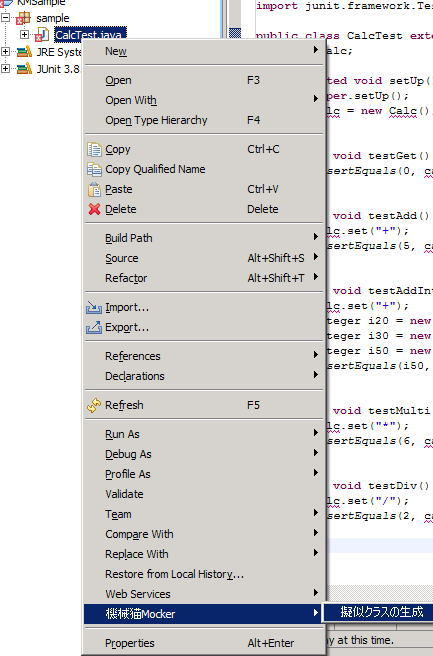

KikainekoMocker
使用ガイド

これでプラグイン導入完了です。
これだけで完了って！ Eclipse かっこいいー！
ここでは、機械猫モッカーの使用方法を説明します。
目次
機械猫モッカー概要
機械猫モッカーとは
機械猫モッカー (KikainekoMocker) は、SCT (Simulated-Class by Tests) というテスト・ケースから
擬似クラスを自動生成する手法を実現するツールです。
機械猫モッカーは、JUnit のテスト・ケースを読み、そのテストを通る擬似クラスを生成します。
擬似クラスとSCT
未実装クラスや環境などに依存するクラスを開発する場合、擬似クラスを活用する手法が一般的です。
擬似クラスとは、モックやスタブ、ドライバなどの名前で知られる
「実装は正しくないが、見かけ上は正しいクラスと同じ振る舞いを見せるクラス」のことで、
主に開発・テストを容易にするために用いられます。
擬似クラスの使用は有用であるが、擬似クラス自身の作成が困難であり、労力がかかります。 対応策として擬似クラス生成用ツールが提供されていますが、 それらツールにも以下のような問題が存在します。

SCT とは、あるクラスに対するテストをそのクラスの入出力に対する定義であると解釈し、 その定義から擬似クラスを自動生成する手法のことです。 テスト・コードには、テスト対象のクラスが持つべき外面的な振る舞いが情報として含まれています。 SCT ではこの情報を利用して、テストから擬似クラスを生成します。
SCT では、テスト・コードを擬似クラスの定義と捕らえるため、 擬似クラスを定義するためのツール独自 API の学習などが不要になります。 また、テスト・コードは破棄されず、実クラスに対しても使用可能です。

機械猫モッカーは、JUnit のテスト・コードを読み込み、 そこから擬似クラスに対する定義を解釈することによって、 そのテストを通る擬似クラスを生成する、SCT を実現するツールです。
[to top]
擬似クラスの使用は有用であるが、擬似クラス自身の作成が困難であり、労力がかかります。 対応策として擬似クラス生成用ツールが提供されていますが、 それらツールにも以下のような問題が存在します。
- 擬似クラスの定義方法が難解である （ツール独自 API に依存）
- 擬似クラスの定義コードは最終的に破棄される
SCT とは、あるクラスに対するテストをそのクラスの入出力に対する定義であると解釈し、 その定義から擬似クラスを自動生成する手法のことです。 テスト・コードには、テスト対象のクラスが持つべき外面的な振る舞いが情報として含まれています。 SCT ではこの情報を利用して、テストから擬似クラスを生成します。
SCT では、テスト・コードを擬似クラスの定義と捕らえるため、 擬似クラスを定義するためのツール独自 API の学習などが不要になります。 また、テスト・コードは破棄されず、実クラスに対しても使用可能です。
機械猫モッカーは、JUnit のテスト・コードを読み込み、 そこから擬似クラスに対する定義を解釈することによって、 そのテストを通る擬似クラスを生成する、SCT を実現するツールです。
[to top]
はじめてみよう
インストール
- 機械猫モッカー・プラグインを download して、zip ファイルを解凍します。
- 解凍したフォルダーを、eclipse の plugins フォルダーに入れます。
これでプラグイン導入完了です。
これだけで完了って！ Eclipse かっこいいー！
※Eclipse を使用せずに、コマンドラインからも使用可能です。
テスト作成
- プラグインが導入できたら、Eclipse を起動してください。
- ここでは、サンプルとして 「 KMSample 」 というプロジェクトを作成しましょう。
- KMSample に sample パッケージを作成します。
- sample パッケージに CalcTest.java を作成します。
- このCalcTest.javaに、「テスト・コードのサンプル」で例としてあげているテスト・コードを実装します。
- 当然、この段階では Calc クラスは存在しないので、Eclipse に激しく怒られます。


機械猫モッカー実行
- CalcTest.java を右クリックしてください。
- [機械猫 Mocker] - [モックの生成]を実行してください。
- 次のような警告がでますが、気にせず「はい」を押してください。
（2回目以降は表示されません） - すると、Calc.java が生成されています。わーい。



テスト実行

テスト・コードのサンプル
機械猫モッカーのためのテスト・ケースのサンプル
機械猫モッカーは JUnit のテスト・ケースをパスする擬似クラスを生成します。
例えば、以下のようなテストをパスする擬似クラスを生成できます。
上記の CalcTest を見ると、プリミティブ型やオブジェクト型を操作できることが分かります。
このように機械猫モッカーは任意の型を操作することが可能です。
（ただし、全ての型を安全に操作できるわけではありません。 詳細は「前提・制約事項」を参照してください。）
また、以下のようなテストをパスする擬似クラスを生成することができます。
TokenTest を見ると、同一メソッドを複数回実行していますが、 機械猫モッカーはこれも問題なく扱えます。
簡易な擬似クラスでは、1メソッドに1つの返り値しか持たせない場合がありますが、 機械猫モッカーは呼び出し順なども考慮して返り値を決定しています。
また、すでに対象となるクラスが存在する場合、 既存のコードをすべてコメント・アウトし、擬似コードを書き込みます。
[to top]
例えば、以下のようなテストをパスする擬似クラスを生成できます。
package sample;
import junit.framework.TestCase;
public class CalcTest extends TestCase {
Calc calc;
protected void setUp() throws Exception {
super.setUp();
calc=new Calc();
}
public void testGet(){
assertEquals(0,calc.get(0,0));
}
public void testAdd(){
calc.set("+");
assertEquals(5,calc.get(2,3));
}
public void testAddInteger(){
calc.set("+");
Integer i20=new Integer(20);
Integer i30=new Integer(30);
Integer i50=new Integer(50);
assertEquals(i50,calc.get(i20,i30));
}
public void testMulti(){
calc.set("*");
assertEquals(6,calc.get(2,3));
}
public void testDiv(){
calc.set("/");
assertEquals(2,calc.get(4,2));
}
}
|
上記の CalcTest を見ると、プリミティブ型やオブジェクト型を操作できることが分かります。
このように機械猫モッカーは任意の型を操作することが可能です。
（ただし、全ての型を安全に操作できるわけではありません。 詳細は「前提・制約事項」を参照してください。）
また、以下のようなテストをパスする擬似クラスを生成することができます。
package sample;
import junit.framework.TestCase;
public class TokenTest extends TestCase {
Token token;
protected void setUp() throws Exception {
super.setUp();
}
public void testNext(){
token=new Token("a=10*c;");
assertEquals("a",token.next());
assertEquals("=",token.next());
assertEquals("10",token.next());
assertEquals("*",token.next());
assertEquals("c",token.next());
assertEquals(";",token.next());
}
public void testLength(){
token=new Token("a=10*c;");
assertEquals("6",token.length());
}
}
|
TokenTest を見ると、同一メソッドを複数回実行していますが、 機械猫モッカーはこれも問題なく扱えます。
簡易な擬似クラスでは、1メソッドに1つの返り値しか持たせない場合がありますが、 機械猫モッカーは呼び出し順なども考慮して返り値を決定しています。
また、すでに対象となるクラスが存在する場合、 既存のコードをすべてコメント・アウトし、擬似コードを書き込みます。
[to top]
テスト・コードの書き方
機械猫モッカーのためのテスト・ケースの書き方
機械猫モッカーは通常のテスト・ケースを解析しますが、いくつかテスト・ケースを書く上での
ポイントがあります。
細かい内容に関しては、「前提・制約事項」をいっしょにご覧ください。
サンプル・プログラムを用いて、簡単なポイントを説明します。
細かい内容に関しては、「前提・制約事項」をいっしょにご覧ください。
サンプル・プログラムを用いて、簡単なポイントを説明します。
擬似クラス対象指定
機械猫モッカーは、擬似化対象クラス、つまりどのクラスを生成するか、の指定を
テスト・ケースのフィールドで判断しています。

この場合、機械猫モッカーは Calc.java を生成すると判断します。
また、ここで「 SomeInterface calc; 」のようにインターフェースを指定すると、 そのインターフェースを実装した擬似クラスを生成します。
あるいは、「 SomeSuperClass calc; 」のようにでスーパークラスを指定すると、 そのスーパークラスを継承した擬似クラスを生成します。
この場合、機械猫モッカーは Calc.java を生成すると判断します。
- 指定するフィールドは必ず一つだけにしてください。
- ここでインスタンス化、null 値代入などはしないで下さい。
また、ここで「 SomeInterface calc; 」のようにインターフェースを指定すると、 そのインターフェースを実装した擬似クラスを生成します。
あるいは、「 SomeSuperClass calc; 」のようにでスーパークラスを指定すると、 そのスーパークラスを継承した擬似クラスを生成します。
メソッドの返り値は assertEquals で設定
擬似化対象クラスのメソッドが返り値を持つ場合（つまり void 型じゃない場合）
は assertEquals で返り値を指定してください。
（当然ですが、void 型は assertEquals に記述しないでください。）

assertEquals 以外で、例えば、以下のように記述すると、
機械猫モッカーはどのような値を返せば良いのか判別できないためエラーになります。
（当然ですが、void 型は assertEquals に記述しないでください。）
assertEquals 以外で、例えば、以下のように記述すると、
int i = calc.get();
|
例外を投げるメソッドの記述
擬似化対象クラスのメソッドが例外を投げる場合は、
try / catch / fail を使用して例外を指定してください。
fail() のひとつ前に記述されているメソッドで例外が発生すると判断します。
fail() 後、最初に catch する Exception を throw すると判断します。

この例の場合、calc.set("a") 呼び出し時に、例外 IllegalArgumentException が発生します。
throw する例外はカスタムのものでも指定可能です。
[to top]
fail() のひとつ前に記述されているメソッドで例外が発生すると判断します。
fail() 後、最初に catch する Exception を throw すると判断します。
この例の場合、calc.set("a") 呼び出し時に、例外 IllegalArgumentException が発生します。
throw する例外はカスタムのものでも指定可能です。
[to top]
前提・制約事項
前提事項
機械猫モッカーは Java1.4 の文法に沿った解析を行いますが、
完全ではありません。ここでは細かな差異を示します。
プリミティブ型
モッカーでは全てのプリミティブ型を扱えません。具体的には、以下の型を扱えません。- float 型（ 1.0f のような形式以外は対応していません）
テスト・ケース記述に関する制限事項
テスト・ケース記述には以下の制限が課せられています。
これらのうちのいくつかは解消されますが、ご注意ください。
[to top]
これらのうちのいくつかは解消されますが、ご注意ください。
- クラス変数に、擬似化対象のクラスを必ず宣言してください。この宣言で擬似化対象を判断します。
また、必ず setUp メソッドか各 test メソッド内でインスタンス化してください。 - 擬似化対象以外のクラス変数は記述しないでください。
- 返り値があるメソッドは、assertEquals で明示してください。
assertEquals を使用しない場合、void と判断します。 - assertEquals( expected , actual ) などを使用する場合、必ず期待値、実測値の順に書いてください。
- 擬似化対象の static メソッドには対応できません。
- 多次元配列は使用できません。
- for 文・ if 文・ while 文・ switch 文などの制御構造文は使用できません。
[to top]
テキストUIからの実行
もう一つの機械猫モッカーの実行方法
通常機械猫モッカーは Eclipse プラグインから実行されることを想定していますが、
テキスト形式から呼び出すことも可能です。
MockMaker クラスを使用します。
具体的には何らかのクラスに以下のmain メソッドを実装して、実行してください。
文字列配列の ss には対象テスト・ファイルのパスを指定してください。（Eclipse プロジェクトからの相対パスです。）
また、MockMaker クラスは、org.kikaineko.mock.textui パッケージに存在します。
[to top]
MockMaker クラスを使用します。
具体的には何らかのクラスに以下のmain メソッドを実装して、実行してください。
public static void main(String[] args){
try{
String[] ss={"src\\sample\\SampleTest.java"};
MockMaker.main(ss);
}catch(Throwable t){
t.printStackTrace();
}
}
|
文字列配列の ss には対象テスト・ファイルのパスを指定してください。（Eclipse プロジェクトからの相対パスです。）
また、MockMaker クラスは、org.kikaineko.mock.textui パッケージに存在します。
[to top]